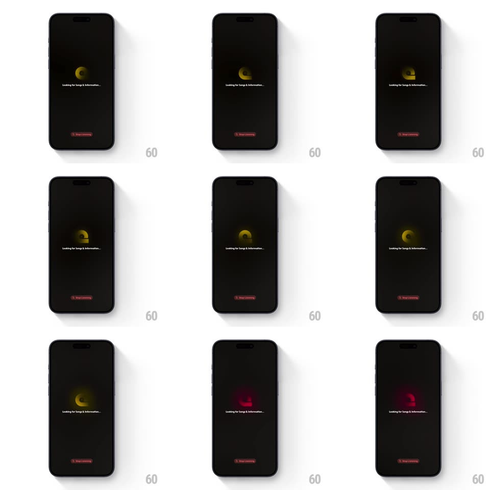

Media
Frame-by-frame

Rebuild this interaction 1:1: NowPlaying's listening loader - a glossy disc logo spins slowly on black, its gradient drifting from gold to red, over "Looking for Songs & Information..." with a red "Stop Listening" pill below.

Rebuild this interaction 1:1: NowPlaying's listening loader - a glossy disc logo spins slowly on black, its gradient drifting from gold to red, over "Looking for Songs & Information..." with a red "Stop Listening" pill below. ## Integration Integration: stack-agnostic spec - springs given as stiffness/damping, timed motions as duration + curve; map every value to your framework and animation library of choice. ## Scene Pure black screen: a small circular disc logo (like a vinyl/CD with a dark bite) rotating center, white caption "Looking for Songs & Information..." beneath, a translucent red "Stop Listening" pill pinned near the bottom. ## Motion spec Pattern: rotating gradient-disc listening state. - The disc rotates continuously (~6s per revolution, linear) with a soft specular highlight that sweeps as it turns. - Its gradient hue drifts on a long cycle: warm gold easing into deep red and back (~8s round trip, smooth sine) - the disc glows faintly onto the black around it. - The caption sits at ~70% opacity, static; the ellipsis cycles (three dots, 900ms). - The red pill breathes subtly (opacity 0.75 <-> 1, 2s) to signal it is live. ## Calibration - Rotation and hue are decoupled loops - they never visibly sync. - The disc is small (~64px); restraint is the brand. ## Reduced motion Static disc; hue fixed at gold. ## Don't miss - The glow bleed around the disc tracks the current hue - gold glows warm, red glows hot. - The whole state idles indefinitely; nothing ever completes or times out on screen.